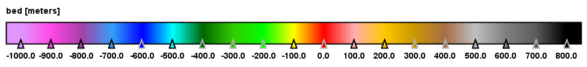
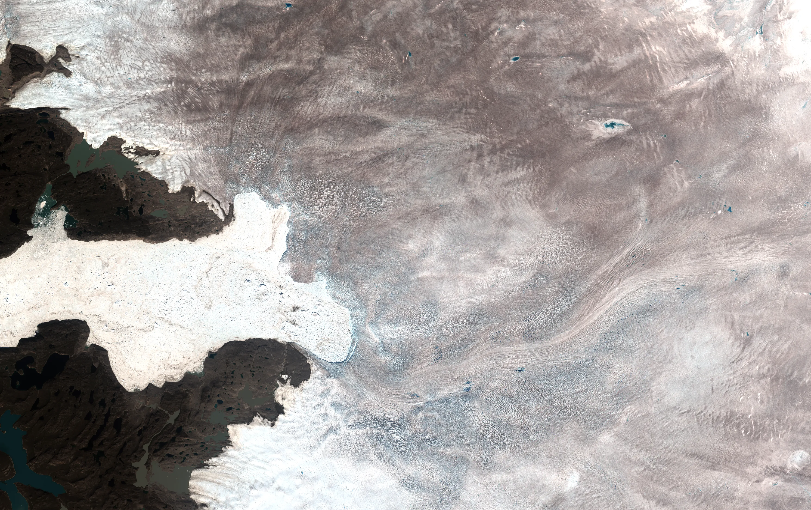
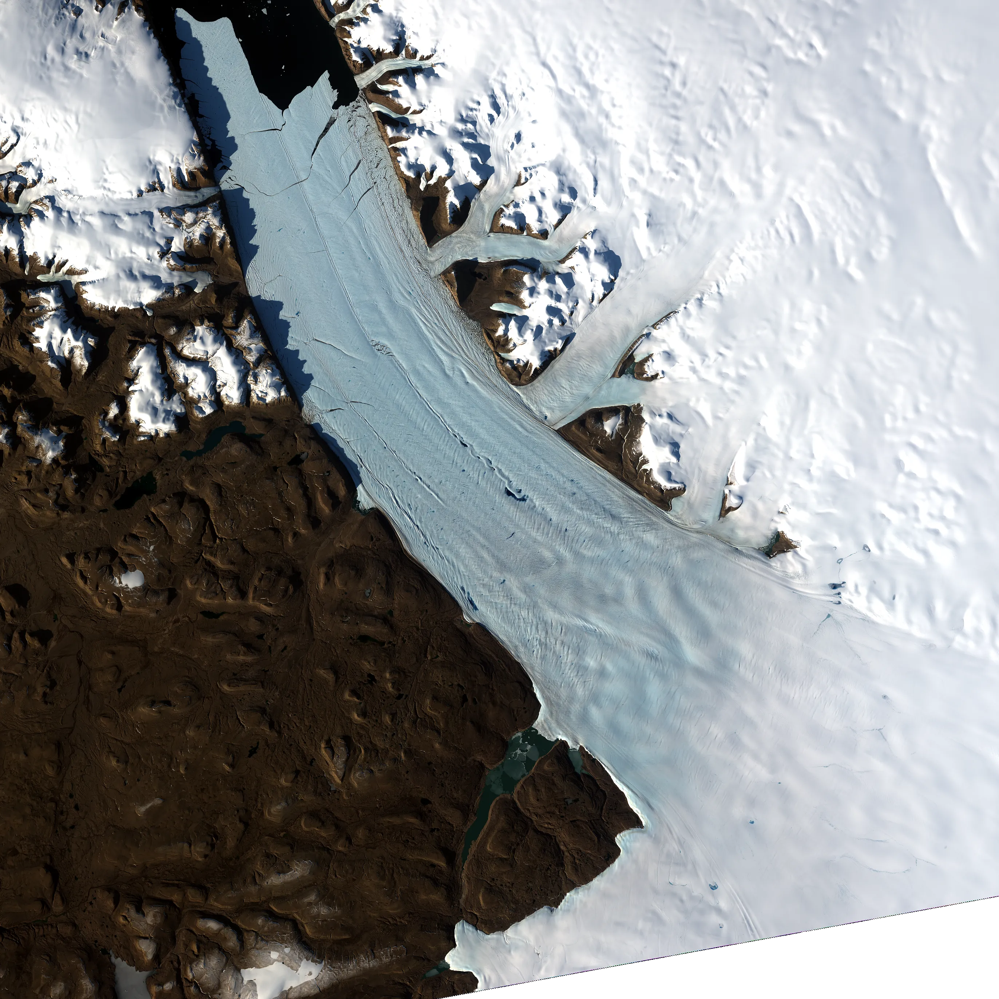
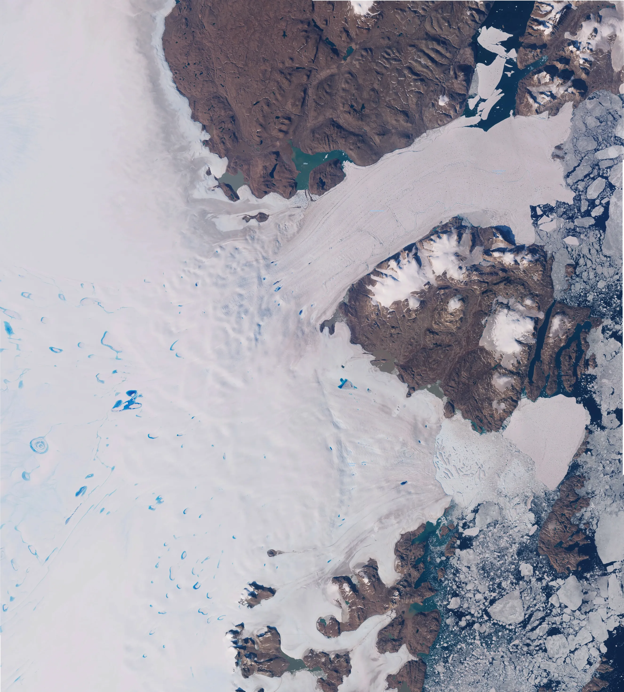

Greenland Bedrock Elevation
Colour Image Composite: 2023-2026



Jakobshavn Glacier
Colour image: August 2026
 >
>

Petermann Glacier
Colour image: August 2026

Greenland North East
Colour image: August 2026

About This Visualization
Explore the hidden topography beneath Greenland's ice sheet using this interactive bedrock elevation visualization. By overlaying high-resolution satellite imagery with NASA’s BedMachine Greenland dataset, users can dynamically compare surface features against subglacial terrain.
Key Features:
- Interactive before/after comparison slider for precise alignment
- Adjustable bedrock opacity to isolate topographic details beneath ice cover
- High-resolution panning and zooming across multiple glacial regions
- Region-specific views: Jakobshavn Glacier, Petermann Glacier, North East Greenland, and full-scale Greenland
Data Sources:
This visualization combines NASA's IceBridge BedMachine Greenland (IDBMG4 v6) for subglacial elevation modeling with Copernicus Sentinel-2 imagery processed by ESA. Temporal coverage spans 2023–2026, enabling near-real-time assessment of ice sheet dynamics and bedrock interactions.
Morlighem, M., Williams, C., Rignot, E., An, L., Arndt, J. E., Bamber, J., Catania, G., Chauché, N., Dowdeswell, J. A., Dorschel, B., Fenty, I., Hogan, K., Howat, I., Hubbard, A., Jakobsson, M., Jordan, T. M., Kjeldsen, K. K., Millan, R., Mayer, L., Mouginot, J., Noël, B., O'Cofaigh, C., Palmer, S. J., Rysgaard, S., Seroussi, H., Siegert, M. J., Slabon, P., Straneo, F., van den Broeke, M. R., Weinrebe, W., Wood, M., & Zinglersen, K. (2025). IceBridge BedMachine Greenland (IDBMG4, Version 6) [Bed Elevation]. Boulder, Colorado USA. NASA National Snow and Ice Data Center Distributed Active Archive Center. https://doi.org/10.5067/6B6B225B8V2D [06/06/2026].
Copernicus Sentinel data 2025-2026, processed by ESA.
Terra / MODIS from NASA Worldview.